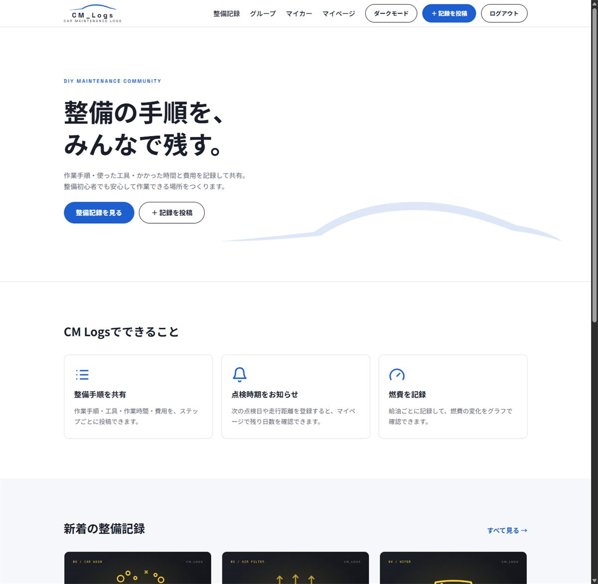
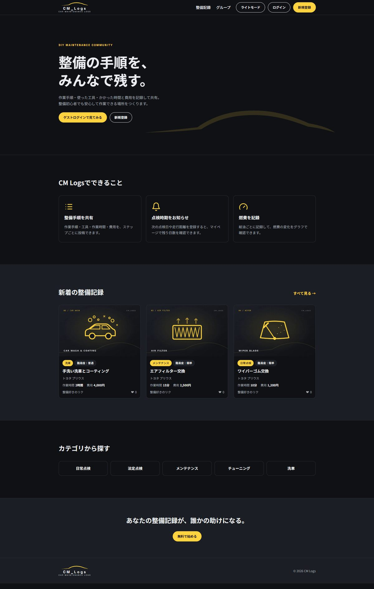
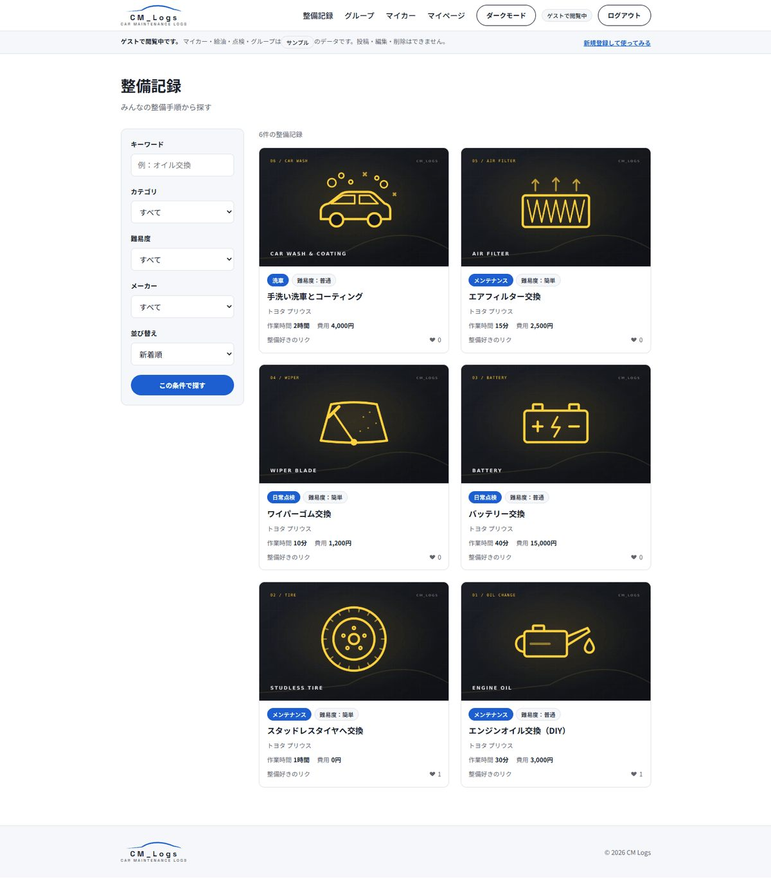
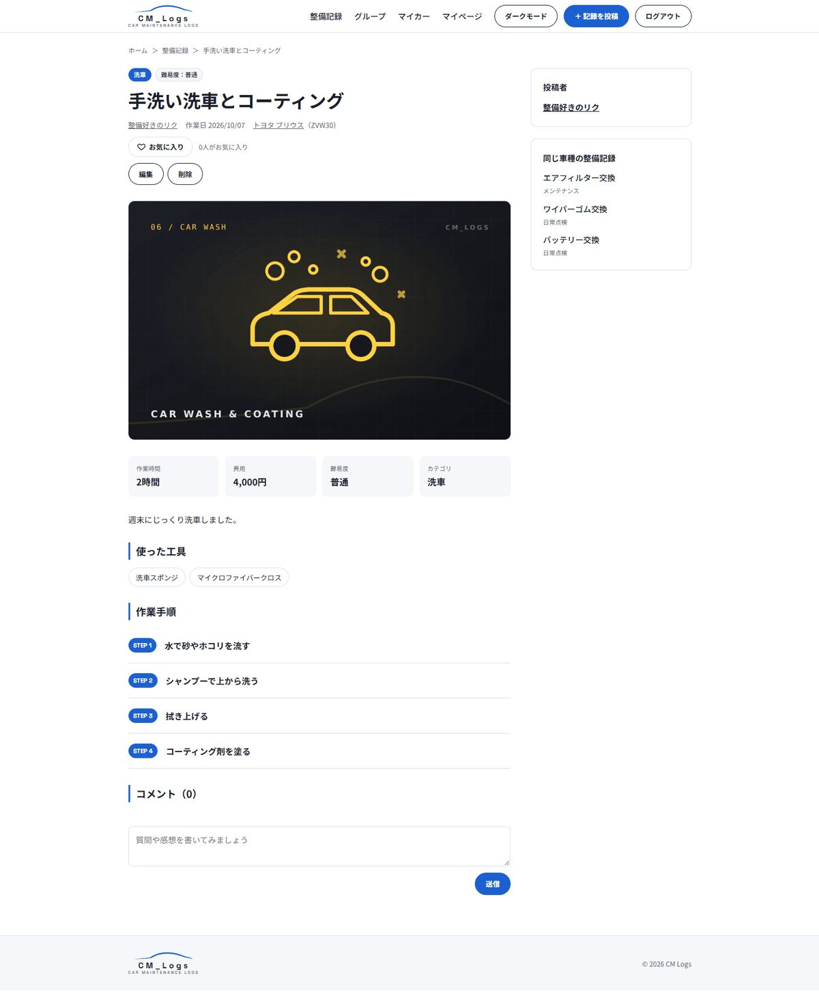
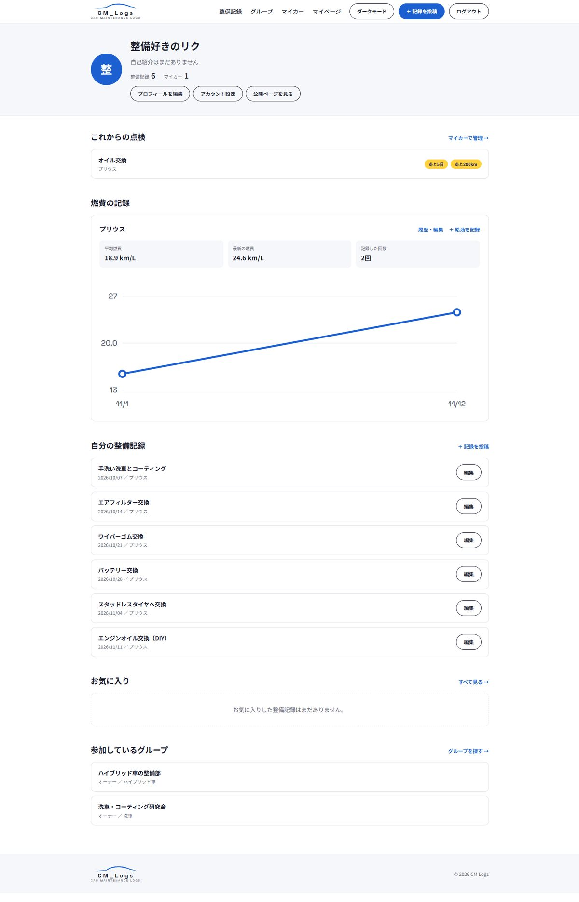

NO.02
スクール制作／Ruby on Rails・AWS
CM_Logs
車の整備手順を投稿・共有し、点検時期や燃費も管理できるコミュニティサイトです。スクールでRails 6で作り、AWSで公開まで経験した「CM_Logs」（Ver.1）を、Rails 8.1で一から作り直しました（Ver.2）。
※ Ver.1は公開を終了しています。Ver.2は本番公開していないため、GitHubのREADMEで画面や起動方法を確認できます。


01概要
学生の頃、整備に取り組もうとしたときに、必要な工具や手順、メンテナンスの時期を忘れてしまい、余計な出費をした経験がありました。こうした情報が一か所にまとまっていれば、初心者でも安心して整備できるのではないかと考え、このテーマを選びました。
これから整備を始める人や整備を学ぶ学生、メンテナンスの時期をつい忘れてしまう人に向けて、手順・工具・費用・作業時間を記録して共有でき、点検の時期も知らせてくれるサイトにしています。
02画面
-

トップページ（ダークモード）
-

整備記録の一覧（検索・絞り込み・並び替え）
-

整備記録の詳細（作業手順・使った工具）
-

マイページ（点検のお知らせ・燃費グラフ）
03主な機能
-
整備記録
- 投稿・編集・削除、下書き保存
- 作業手順と使った工具を、ボタンで欄を増やしながら入力
- キーワード検索、カテゴリ・難易度・メーカーでの絞り込み
- 新着順・人気順・費用が安い順・作業時間が短い順の並び替え
- コメント、お気に入り
-
マイカー・マイページ
- 車の登録（複数台）
- 点検の予定（日付・走行距離）と、残り日数・残り距離のお知らせ
- 給油の記録と、燃費の折れ線グラフ・平均燃費
- 自分の整備記録・お気に入り・参加中のグループの一覧
-
ユーザー・グループ
- プロフィール編集、ユーザーごとの公開ページ
- グループの作成、参加申請とオーナーの承認
- オーナーからメンバーへのお知らせメール
-
アカウント・管理画面
- 新規登録・ログイン、ゲストログイン（閲覧のみ）
- ダークモード／ライトモードの切り替え
- スマホ・タブレット・PC対応
- 管理画面（ダッシュボード、一覧・検索、削除・復元）
04作り直しで改善したこと
-
費用・作業時間で並び替え
- Ver.1
- 費用・作業時間を文字で保存していたため、安い順・短い順に並べられなかった
- Ver.2
- 数値で保存し、「費用が安い順」「作業時間が短い順」で並び替えられるようにした
-
作業手順と工具を別のテーブルに
- Ver.1
- 工具は1つの文字の欄に、作業手順はJSONで1つの列にまとめて保存していた
- Ver.2
- 手順と工具をそれぞれ別のテーブルにし、入力欄はボタンで増減できるようにした（Stimulus）
-
コメント・お気に入りをその場で反映
- Ver.1
- ページ全体を読み直して反映していた
- Ver.2
- Turbo Streamで、変わった部分だけをその場で書き換えるようにした
-
燃費をグラフで見られるように
- Ver.1
- 燃費は数字の表示のみだった
- Ver.2
- Rubyで座標を計算し、SVGで折れ線グラフを自作した（外部ライブラリなし）
05工夫した点
-
POINT 01
登録なしで中を見られるゲスト用データ
ゲストにもマイカー・給油・点検・グループの見本データを用意し、登録しなくても点検のお知らせや燃費グラフを見られるようにしました。見本には印をつけ、編集・削除のボタンは出しません。
-
POINT 02
外部ライブラリなしの燃費グラフ
線や点の色をCSSの変数で指定し、ダーク／ライトの切り替えに自動で追従します。グラフの内容は、読み上げソフト向けに表でも出しています。
-
POINT 03
偏らない平均燃費の計算
毎回の燃費の平均ではなく「合計の走行距離 ÷ 合計の給油量」で計算し、給油量が少ない回に引っぱられないようにしました。
-
POINT 04
表示を速くするN+1対策
関連するデータは includes でまとめて読み込み、お気に入りの数はカウンターキャッシュで持つことで、一覧の表示で何度もデータベースに問い合わせないようにしました。
-
POINT 05
他人のデータを触れない作り
編集・削除は必ずログイン中のユーザーの持ち物の中から探すので、URLの番号を書き換えても他人のデータは操作できません。お気に入りやグループ参加の二重登録も、データベースの制約で止めています。
-
POINT 06
アクセシビリティ
見出しの構造、aria-label・aria-pressed、キーボードで操作できるボタン、色だけに頼らない表示を意識しました。お知らせメールは1人に1通ずつ送り、ほかのメンバーのアドレスが見えないようにしています。
06設計書（Ver.1）
Ver.1を作るときに、ER図・画面設計・テーブル定義書・アプリケーション詳細設計書を作成しました。